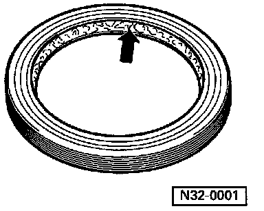
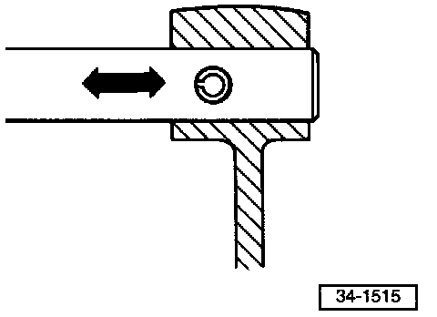

General Repair Instructions
General
Accurate and successful transmission repairs require:
^ Care and cleanliness.
^ Proper tools, in good working order.
^ Observation of basic safety rules.
Transmission
- While installing the transmission, be sure that the dowel sleeves for aligning the engine and transmission are properly located.
- After replacing the transmission, top up the gear oil to the lower edge of the filler hole.
Gaskets and Seals
- Always replace 0-rings.
- Always replace paper gaskets.
- Thoroughly clean all mating surfaces before installation.
- Always replace radial shaft seals.

Before installation of radial shaft seals:
^ Lightly oil outer circumference and fill space between sealing lips (arrow) with multi-purpose grease.
Circlips
- Always replace.
- Do not overstretch.
- Circlips must be fully seated in their grooves.
Spring Pins
- Always replace.

- Installation position: slot should be aligned with line of force (arrow).
Screws, bolts, and nuts
- Loosen and tighten all cover and housing fasteners in a diagonal pattern.
- Especially sensitive parts such as clutch pressure plates must not be distorted. Loosen and tighten fasteners in stages, in a diagonal pattern.
- Always replace self-locking bolts and nuts.
Bearings
- Install needle bearings with the lettering (on the side with thicker material) toward the installation tool.
- Lubricate all bearings in the transmission with gear oil before installing. Lubricate with particular care when measuring friction (turning) torque.
- Always replace tapered roller bearings on the same shaft as a set. Use sets of bearings from the same manufacturer whenever possible.
- Heat inner races of tapered roller bearings to approx. 100°C (212°F) before installing.
- Do not interchange inner and outer bearing races with those from other bearings of the same size.
Adjustment Shims
- Measure shim thickness at several different points using a micrometer. Varying tolerances make it possible to select the precise shim thickness required.
- Check shims for burrs and signs of damage.
- Only install shims that are in perfect condition.
Synchronizer Rings
- Check for signs of wear; replace where necessary. Do not interchange.
- When re-using, install synchronizer rings on the same gears with which they were previously matched.
- Lubricate with gear oil before installing.
Gears
- Before pressing on, clean and heat to approx. 100°C (212°F) on a hot plate.